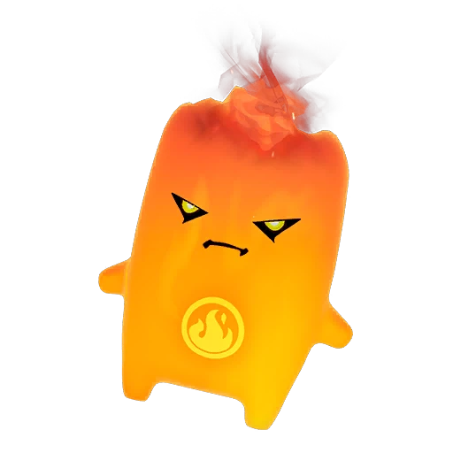

Fortnite Sprite · Rare
Fire Sprite Guide: Rarity, Ability, Variants and Drop Rates
Releases a fiery burst after you deal enough damage. Find it, extract it, and track every Fire variant on the FORTNITE SPRITES TRACKER.

- Rarity
- Rare
- Ability
- Releases a fiery burst after you deal enough damage.
- Where to find
- City and built-up POIs.
- Summon cost
- 100 Sprite Dust
- Variants
- 7 released
- Added
- v41.00
| Variant | Drop rate | Bonus | Status |
|---|---|---|---|
| Fire | — | Standard ability | Released |
| Gold Fire | 0.75% | 3× elimination XP | Released |
| Gummy Fire | 0.62% | +20% Sprite Dust | Released |
| Galaxy Fire | 0.50% | +30% ammo | Released |
| Holofoil Fire | 0.25% | Squad rare-find chance | Released |
| Cube Fire | 0.25% | Overdrive in the Storm | Released |
| Quack Fire | — | Bonus TBA | Released |
Track your Fire Sprite collection — mark every variant you own.
Open the FORTNITE SPRITES TRACKER →What the Fire Sprite Is and How Rare It Is
The Fire Sprite is one of the Rare-tier companions added to Fortnite in patch v41.00, sitting alongside Water, Earth, and Fishy as part of the elemental Rare lineup. As a Rare Sprite, it is far more common than the Epic, Legendary, or Mythic options, which makes the Fire Sprite a realistic early collection target rather than a once-in-a-season chase.
Its visual theme leans into flame and ember effects, complete with a glowing aura that stands out clearly in your roster once equipped, and it shares the same Rare drop weighting as its elemental siblings. If you are building out your full set, the Fire Sprite is usually one of the first entries you can reliably complete.
How to Find and Extract the Fire Sprite
The Fire Sprite spawns around city and built-up POIs, so the named towns and dense urban areas are where you should look rather than open fields or coastline. Landing in a busy POI early gives you the best window to spot one before the lobby thins out.
You can also summon it directly for a cost of 100, which removes the randomness of map hunting if you have the resource to spare. Once you have located the Fire Sprite, you extract it the same way as any other Sprite by securing it and surviving long enough to bank the pickup, after which it is added to your inventory.
The Fire Sprite Ability and Whether It Is Worth Using
The Fire Sprite ability releases a fiery burst after you deal enough damage, turning sustained aggression into bonus area effect output. That damage-gated trigger means it rewards players who push fights and stay on target rather than those who play passively from range.
In the close and mid-range engagements common to city POIs, the extra burst can finish a knocked opponent or pressure a full squad, so it pairs naturally with the urban areas where the Fire Sprite spawns. It is a solid, dependable pick for aggressive loadouts, and because the burst scales with how often you commit to fights, it tends to feel most rewarding for shotgun and SMG players. That said, players who prefer healing or movement utility may rank other Rare Sprites slightly higher, so weigh it against your own playstyle.
Every Variant of the Fire Sprite With Drop Rates and Bonuses
The Fire Sprite comes in several themed variants, each with its own rarity weighting and gameplay perk. The Normal version carries the standard ability with no extra bonus; its drop rate is no longer published. The Gold Fire Sprite drops at 0.75% and grants 3x bonus Sprite XP from eliminations, making it the variant to chase for fast leveling. The Gummy Fire Sprite sits at 0.62% and adds +20% Sprite Dust on extraction, which is excellent for crafting income.
The Galaxy version is rarer at 0.5% and gives +30% more ammo on pickup. The Holofoil Fire Sprite went live on July 9, 2026 — it drops at 0.25% and grants your squad a chance to find rare Sprites from containers. The Cube Fire Sprite (live since July 23, rate published at 0.25% on July 30) adds Overdrive while you are in the Storm, and the Quack Fire Sprite arrived July 30 as a Sprite Mastery Part 4 unlock. Collecting all seven themes is the long-term goal for completionists chasing the full set.
Tips and Strategy for Chasing the Fire Sprite
Because this companion favors city and built-up POIs, plan your drop around the busiest named locations and open chests aggressively to raise your spawn chances. If you are specifically hunting a Gold or Gummy Fire Sprite, expect a grind, since both sit below one percent and you will see many Normal pulls first. Using the 100 summon when available is a smart way to guarantee a Fire Sprite when the random spawns are not cooperating.
Squad play also helps, as more players searching the same POI means more containers checked per match and more rolls at the rarer themes. Banking each pickup before you take a fight protects your progress, since dying before extraction means the spawn is lost. You can track your Fire Sprite collection on the FORTNITE SPRITES TRACKER to see exactly which variants you still need, and keeping the FORTNITE SPRITES TRACKER open while you play makes it easy to mark off each new pull the moment you extract it.
Frequently asked questions
How rare is the Fire Sprite in Fortnite?
The Fire Sprite is a Rare-tier Sprite. The Normal version's drop rate is no longer published, while the Gold drops at 0.75%, the Gummy at 0.62% and the Galaxy at 0.5%, so the base companion is fairly common but its special themes are tough pulls.
Where do you find the Fire Sprite?
It spawns at city and built-up POIs, so land at busy named locations and search containers. You can also summon one directly for a cost of 100 if you would rather skip the random hunt.
Is the Fire Sprite ability good?
Yes, for aggressive players. It releases a fiery burst after you deal enough damage, which suits the close-range fights common in city POIs, though support-focused players may prefer a healing or movement Sprite instead.